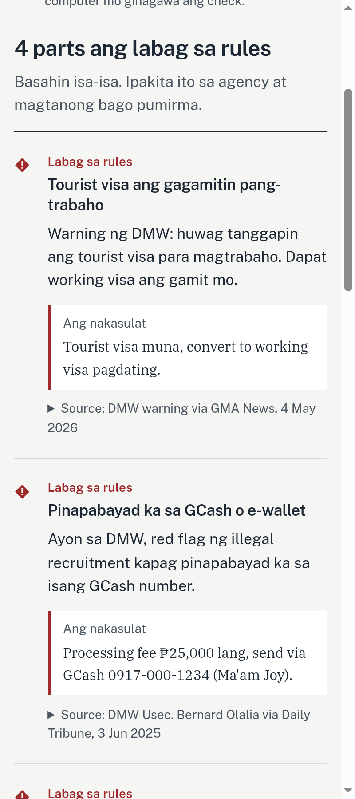

Highlight a Facebook post or chat, right-click → I-check sa Kontrata. The side panel flags tourist visas, GCash payments, fixers and placement fees, fully offline. The extension has no network code.
